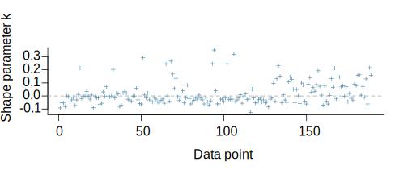

This vignette explains how to estimate models for ordinal outcomes using the stan_polr function in the rstanarm package.
The four steps of a Bayesian analysis are
Steps 3 and 4 are covered in more depth by the vignette entitled “How to Use the rstanarm Package”. This vignette focuses on Step 1.
One of the strengths of doing MCMC with Stan — as opposed to a Gibbs sampler — is that reparameterizations are essentially costless, which allows the user to specify priors on parameters that are either more intuitive, numerically stable, or computationally efficient without changing the posterior distribution of the parameters that enter the likelihood. Advantageous parameterizations are already built into the Stan programs used in the rstanarm package, so it is just a matter of using these vignettes to explain how the priors work in the context of these reparameterizations.
Ordinal outcomes fall in one of \(J\) categories. One way to motivate an ordinal model is to introduce a latent variable, \(y^\ast\), that is related to the observed outcomes via an observation mechanism: \[y=\begin{cases} 1 & \mbox{if }y^{\ast}<\zeta_{1}\\ 2 & \mbox{if }\zeta_{1}\leq y^{\ast}<\zeta_{2}\\ \vdots\\ J & \mbox{if }\zeta_{J-1}\leq y^{\ast} \end{cases},\] where \(\boldsymbol{\zeta}\) is a vector of cutpoints of length \(J-1\).
Then \(y^\ast\) is modeled as a linear function of \(K\) predictors \[y^\ast = \mu + \epsilon = \mathbf{x}^\top \boldsymbol{\beta} + \epsilon,\] where \(\epsilon\) has mean zero and unit scale but can be specified as being drawn from one of several distributions. Note that there is no “intercept” in this model since the data cannot distinguish an intercept from the cutpoints. However, if \(J = 2\), then \(\zeta_1\) can be referred to as either the cutpoint or the intercept.
A Bayesian can treat \(y^\ast\) as another unknown parameter, although for computational efficiency the Stan code essentially integrates each \(y^\ast\) out of the posterior distribution, leaving the posterior distribution of \(\boldsymbol{\beta}\) and \(\boldsymbol{\zeta}\). Nevertheless, it is useful to motivate the model theoretically as if \(y^\ast\) were just an unknown parameter with a distribution truncated by the relevant element(s) of \(\boldsymbol{\zeta}\).
If \(y^\ast\) were observed we would simply have a linear regression model for it, and the description of the priors in the vignette entitled “Estimating Linear Models with the rstanarm Package” would apply directly. Another way to say the same thing is conditional on a realization of \(y^\ast\), we have a linear regression model and the description of the priors in the other vignette does apply (and should be read before continuing with this subsection).
The stan_lm function essentially specifies a prior on \(\boldsymbol{\theta} = \mathbf{R}^{-1} \boldsymbol{\beta}\), where \(\mathbf{R}\) is the upper triangular matrix in the QR decomposition of the design matrix, \(\mathbf{X} = \mathbf{Q} \mathbf{R}\). Furthermore, in stan_lm, \(\sigma_{\epsilon} = \sigma_y \sqrt{1 - R^2}\) where \(R^2\) is the proportion of variance in the outcome that is attributable to the coefficients in a linear model.
The main difference in the context of a model for an ordinal outcome is that the scale of \(y^\ast\) is not identified by the data. Thus, the ordinal model specifies that \(\sigma_{\epsilon} = 1\), which implies that \(\sigma_{y^\ast} = 1 / \sqrt{1 - R^2}\) is an intermediate parameter rather than a primitive parameter.
It is somewhat more difficult to specify a prior value for the \(R^2\) in an ordinal model because \(R^2\) refers to the proportion of variance in the \(y^\ast\) that is attributable to the predictors under a linear model. In general, the \(R^2\) tends to be lower in an ordinal model than in a linear model where the continuous outcome is observed.
The other difference is that an ordinal model does not have a global intercept but rather a vector of \(J-1\) cutpoints. The implied prior on these cutpoints used by the rstanarm package is somewhat novel. The user instead specifies a Dirichlet prior on \(\Pr\left(y=j\right)\left.\right|\overline{\mathbf{x}}\), which is to say the prior probability of the outcome falling in each of the \(J\) categories given that the predictors are at their sample means. The Dirichlet prior is for a simplex random variable, whose elements are non-negative and sum to \(1\). The Dirichlet PDF can be written as \[f\left(\boldsymbol{\pi}|\boldsymbol{\alpha}\right) \propto \prod_{j=1}^J{\pi_j^{\alpha_j - 1}}, \] where \(\boldsymbol{\pi}\) is a simplex vector such that \(\pi_j = \Pr\left(y=j\right)\left.\right|\overline{\mathbf{x}}\).
The Dirichlet prior is one of the easiest to specify because the so-called “concentration” hyperparameters \(\boldsymbol{\alpha}\) can be interpreted as prior counts, i.e., prior observations for each of the J categories (although they need not be integers). If \(\alpha_j = 1\) for every \(j\) (the default used by rstanarm) then the Dirichlet prior is jointly uniform over the space of these simplexes. This corresponds to a prior count of one observation falling in each of the \(J\) ordinal categories when the predictors are at their sample means and conveys the reasonable but weak prior information that no category has probability zero. If, for each \(j\), \(\alpha_j = \alpha > 1\) then the prior mode is that the \(J\) categories are equiprobable, with prior probability \(1/J\) of the outcome falling in each of the \(J\) categories. The larger the value of \(\alpha\) the more sharply peaked the distribution is at the mode.
The \(j\)-th cutpoint \(\zeta_j\) is then given by \[\zeta_j = F_{y^\ast}^{-1}\left(\sum_{i=1}^j{\pi_i}\right),\] where \(F_{y^\ast}^{-1}\) is an inverse CDF function, which depends on the assumed distribution of \(y^\ast\). Common choices include the normal and logistic distributions. The scale parameter of this distribution is again \(\sigma_{y^\ast} = 1/\sqrt{1 - R^2}\). In short, by making each \(\zeta_j\) a function of \(\boldsymbol{\pi}\), it allows us to specify a Dirichlet prior on \(\boldsymbol{\pi}\), which is simpler than specifying a prior on \(\boldsymbol{\zeta}\) directly.
In this section, we start with an ordinal model of tobacco consumption as a function of age and alcohol consumption. Frequentist estimates can be obtained using the polr function in the MASS package:
library(MASS)
print(polr(tobgp ~ agegp + alcgp, data = esoph), digits = 1)Call:
polr(formula = tobgp ~ agegp + alcgp, data = esoph)
Coefficients:
agegp.L agegp.Q agegp.C agegp^4 agegp^5 alcgp.L alcgp.Q alcgp.C
-0.37 -0.38 -0.24 0.04 -0.04 -0.19 -0.02 0.03
Intercepts:
0-9g/day|10-19 10-19|20-29 20-29|30+
-1.0 0.2 1.3
Residual Deviance: 241.8195
AIC: 263.8195 To obtain Bayesian estimates, we prepend stan_ and specify the priors:
library(rstanarm)
post0 <- stan_polr(tobgp ~ agegp + alcgp, data = esoph,
prior = R2(0.25), prior_counts = dirichlet(1),
chains = CHAINS, cores = CORES, seed = SEED, iter = 200)print(post0, digits = 1)stan_polr(formula = tobgp ~ agegp + alcgp, data = esoph, chains = CHAINS,
cores = CORES, seed = SEED, iter = 200, prior = R2(0.25),
prior_counts = dirichlet(1))
Estimates:
Median MAD_SD
agegp.L -0.2 0.3
agegp.Q -0.2 0.4
agegp.C -0.1 0.3
agegp^4 0.0 0.3
agegp^5 -0.1 0.3
alcgp.L -0.1 0.3
alcgp.Q 0.0 0.3
alcgp.C 0.0 0.3
Cutpoints:
Median MAD_SD
0-9g/day|10-19 -1.0 0.2
10-19|20-29 0.2 0.2
20-29|30+ 1.3 0.2
Sample avg. posterior predictive
distribution of y (X = xbar):
Median MAD_SD
mean_PPD:0-9g/day 0.3 0.1
mean_PPD:10-19 0.3 0.1
mean_PPD:20-29 0.2 0.1
mean_PPD:30+ 0.2 0.1 The point estimates, represented by the posterior medians, are qualitatively similar to the maximum-likelihood estimates but are somewhat shrunk toward zero due to the regularizing prior on the coefficients. The estimated cutpoints are \(\zeta_1 = -1.01\), \(\zeta_2 = 0.2\), and \(\zeta_3 = 1.26\), which cut at \(10\), \(20\), and \(30\) grams of tobacco consumption per day. Since these cutpoints are actually known, it would be more appropriate for the model to take that into account, but stan_polr does not currently support that.
Next, we utilize an example from the MASS package where low birthweight is the binary outcome of interest. First, we recode some of the variables:
data("birthwt", package = "MASS")
birthwt$race <- factor(birthwt$race, levels = 1:3,
labels = c("white", "black", "other"))
birthwt$bwt <- birthwt$bwt / 1000 # convert from grams to kilograms
birthwt$low <- factor(birthwt$low, levels = 0:1, labels = c("no", "yes"))It is usually a good idea to rescale variables by constants so that all the numbers are in single or double digits. We start by estimating a linear model for birthweight in kilograms, flipping the sign so that positive coefficients are associated with lower birthweights.
post1 <- stan_lm(-bwt ~ smoke + age + race + ptl + ht + ftv,
data = birthwt, prior = R2(0.5),
chains = CHAINS, cores = CORES, seed = SEED)print(post1)stan_lm(formula = -bwt ~ smoke + age + race + ptl + ht + ftv,
data = birthwt, chains = CHAINS, cores = CORES, seed = SEED,
prior = R2(0.5))
Estimates:
Median MAD_SD
(Intercept) -3.3 0.2
smoke 0.4 0.1
age 0.0 0.0
raceblack 0.4 0.2
raceother 0.4 0.1
ptl 0.2 0.1
ht 0.4 0.2
ftv 0.0 0.0
sigma 0.7 0.0
log-fit_ratio 0.0 0.1
R2 0.2 0.0
Sample avg. posterior predictive
distribution of y (X = xbar):
Median MAD_SD
mean_PPD -2.9 0.7 Next, we estimate an “ordinal” model for the incidence of low birthweight, which is defined as a birth weight of less than \(2.5\) kilograms. Even though this outcome is binary, a binary variable is a special case of an ordinal variable with \(J=2\) categories and is acceptable to stan_polr. We can think of bwt as something proportional to \(y^\ast\) and pretend that it is not observed, forcing us to estimate an ordinal model.
post2 <- stan_polr(low ~ smoke + age + race + ptl + ht + ftv, data = birthwt,
prior = R2(0.5), prior_counts = dirichlet(c(1,1)),
method = "probit",
chains = CHAINS, cores = CORES, seed = SEED)plot(loo(post2))
This prior seems to have worked well in this case because none of the points in the plot are above \(0.5\), which would have indicated the the posterior is very sensitive to those observations. If we compare the estimated coefficients,
round(cbind(Linear = coef(post1), Ordinal = coef(post2),
Rescaled = coef(post1) / sigma(post1)), 3) Linear Ordinal Rescaled
(Intercept) -3.265 -0.563 -4.832
smoke 0.365 0.516 0.540
age -0.003 -0.024 -0.004
raceblack 0.392 0.529 0.580
raceother 0.405 0.548 0.599
ptl 0.150 0.406 0.222
ht 0.371 0.710 0.548
ftv -0.002 -0.009 -0.004they have the same signs and similar magnitudes, with the exception of the “Intercept”. In an ordinal model where the outcome only has \(J=2\) categories, this “Intercept” is actually \(\zeta_1\), but it is more conventional to call it the “Intercept” so that it agrees with stan_glm when family = binomial(link = 'probit'). Recall that \(\sigma_{\epsilon} = 1\) in an ordinal model, so if we rescale the coefficients from a linear model by dividing by the posterior median of \(\sigma\), the resulting coefficients are even closer to those of the ordinal model.
This illustrates the fundamental similarity between a linear model for a continuous observed outcome and a linear model for a latent \(y^\ast\) that generates an ordinal observed outcome. The main difference is when the outcome is continuous and observed, we can estimate the scale of the errors meaningfully. When the outcome is ordinal, we can only fix the scale of the latent errors to \(1\) arbitrarily.
Finally, when \(J = 2\), the stan_polr function allows you to specify non-NULL values of the shape and rate arguments, which implies a “scobit” likelihood where the probability of success is given by \(F\left(y^\ast \right)^\alpha\), where \(F\left(\right)\) is the logistic CDF and \(\alpha > 0\) is a skewing parameter that has a gamma prior with a given shape and rate. If \(\alpha \neq 1\), then the relationship between \(y^\ast\) and the probability of success is asymmetric. In principle, it seems appropriate to estimate \(\alpha\) but in practice, a lot of data is needed to estimate \(\alpha\) with adequate precision. In the previous example, if we specify shape = 2 and rate = 2 to reflect the prior beliefs that \(\alpha\) is expected to be \(1\) but has a variance of \(\frac{1}{2}\), then the loo calculation yields many Pareto shape parameters that are excessively large. However, with more than \(189\) observations, such a model may be more fruitful.
The posterior distribution for an ordinal model requires priors on the coefficients and the cutpoints. The priors used by the stan_polr function are unconventional but should work well for a variety of problems. The prior on the coefficients is essentially the same as that used by the stan_lm function but omits a scale parameter because the standard deviation of the latent \(y^\ast\) is not identified by the data. The cutpoints are conditionally deterministic given a simplex vector for the probability of falling in each of the \(J\) ordinal categories given that the predictors are at their sample means. Thus, a Dirichlet prior — which is relatively easy to specify and has a good default of jointly uniform — on this simplex completes the posterior distribution.
This approach provides an alternative to stan_glm with family = binomial() even if the outcome variable has only two categories. The stan_glm function has more options for the prior on the coefficients and the prior on the intercept (which can be interpreted as the first cutpoint when \(J = 2\)). However, it may be more difficult to obtain efficient sampling with those priors.